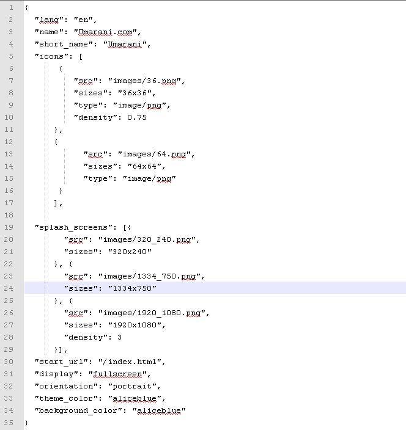
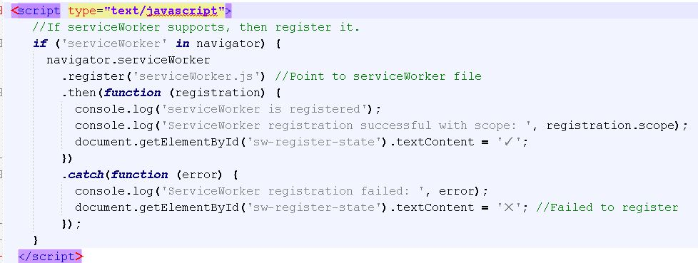
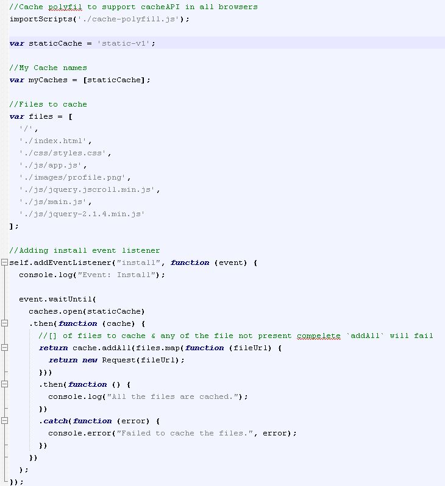

Create your first PWA
January 30,2016
We will start building our first basic PWA. The necessary ingredients of this recipe are : 1. Https enabled hosting 2. Manifest. json 3. Service workers 4. Cache-polyfill.js library First of all create a dead simple webpage and make sure it is mobile friendly, we are not going to spend much of our time here on webpage design so you can keep it raw. Now we need to add manifest.json file to our webroot folder see example file from this app below.  Before uploading this file you can verify your manifest.json file here. After successful validation upload that file in webroot, This file helps chrome browser to identify you webpage as PWA. Now in your webpage, index.html add a code for service worker registration. See below code for service worker registration.  Now see how to add your files to browser caches. This code adds images, js,css to browser caches. In this code we call cache polyfill library and it has important caching functions.  For better understanding refer all code here on github.